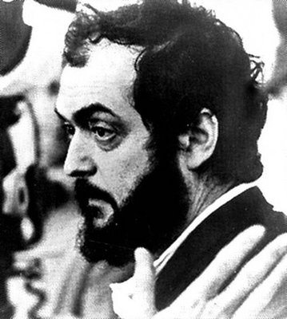
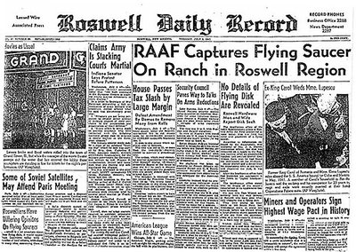

Space Wars
Two histories of space. One was broadcast. One was classified. Both are real. Fifty-three years after Apollo 17 — on the day Artemis II left for the Moon — the question wasn’t whether we went. It was what happened after we got there.
The Foundation
The Rocket Men
Every history of the American space program begins with a lie of omission. We are told the story of brilliant engineers who reached for the stars. We are not told where they came from.
Von Braun wasn’t alone. Kurt Debus, V-2 launch director and former SS member, became the first director of Kennedy Space Center. Arthur Rudolph, who used slave labor at Mittelbau-Dora, managed the Saturn V program. Hubertus Strughold, the “Father of Space Medicine,” directed the Luftwaffe’s aeromedical institute in Berlin — an institution later linked by historians to Dachau hypoxia and hypothermia data. The U.S. Air Force named its aeromedical library at Brooks Air Force Base after him in 1977; his name was not stripped until 1995 after public protest, and the base itself closed in 2011.
These were not junior technicians swept up in a regime. They were architects of weapons of mass destruction. And they built NASA.
Building NASA
The National Aeronautics and Space Act of 1958 created NASA as a civilian agency. But from day one, its personnel, its technology, and its institutional DNA came from the military — and before that, from the Third Reich.
The Race
What followed was the most dramatic engineering sprint in human history. In eleven years — from Sputnik (1957) to Apollo 8 (1968) — humanity went from no satellite in orbit to humans circling the Moon.
The official story is inspiring: President John F. Kennedy’s challenge, the Right Stuff, American ingenuity. And much of it is true. Hundreds of thousands of engineers worked on Apollo. For more than half a century — until NASA’s SLS (2022) and SpaceX’s Starship (2023) surpassed its liftoff thrust — the Saturn V remained the most powerful rocket ever flown, and it still holds the record for the heaviest payload delivered to lunar orbit. The achievement was real.
But the broadcast? That’s where the story gets complicated.
The Broadcast
On July 20, 1969, an estimated 600 million people watched Neil Armstrong step onto the Moon. It was the most-watched broadcast in human history. It was also the beginning of a fracture in public trust that has never healed.
This is not a “we never went” argument. The evidence strongly suggests we did go. The question is whether what was broadcast is what actually happened — and what was found when we got there.
The Filmmaker

To be clear: the existence of studio craft capable of staging convincing lunar imagery does not prove the broadcast was faked. But it created a capability — one demonstrated at exactly the right time, during a geopolitical race where failure was not an option.
The Missing Record
Consider what this means. NASA achieved one of the defining technological feats in human history — and then recorded over the raw instrumentation tapes. At minimum, erasing the untranscoded primary telemetry of humanity’s signature achievement represents staggering archival negligence — and permanently damaged chain of custody.
The Silent Astronaut
Neil Armstrong — the first human to walk on the Moon — became one of the most famously reclusive public figures in American history. He gave almost no interviews. He avoided the spotlight. He became a professor of aerospace engineering at the University of Cincinnati and disappeared from public life.
Armstrong was addressing a group of students that day — prefacing the line with “we have only completed a beginning.” In plain scientific terms, it reads as a classic call to keep exploring. Yet from a famously guarded first man on the Moon, the phrase “truth’s protective layers” lingered — and he never elaborated.
The Lost Technology

The Radiation Question
The technical answers are real: modern avionics are far more vulnerable to ionizing radiation than 1960s discrete circuitry, safety tolerances are tighter, and measurement tools are vastly better. Yet the visual contrast remained jarring in April 2026: after half a century, NASA needed 5,600 manikin sensors, wearable vests, and a Nature validation paper — and still saw an unpredicted heat-shield failure on Artemis I.
Even accepting every mainstream engineering explanation, the uncomfortable question stood: why did returning to lunar space look, in schedule and cost, like solving the problem for the first time?
Two Histories
Like the show For All Mankind, where an alternate history of space plays out alongside the one we know — our actual world contains two competing narratives about what happened. They stand at odds. And they’re both supported by evidence.
Meanwhile, robotic lunar capability has advanced dramatically. China landed on the far side of the Moon (2019) and returned samples from it (2024). India landed near the south pole (2023). Japan demonstrated precision landing (2024). Eight successful robotic soft landings since 2013 — from four different countries (including two U.S. commercial landers). Prior to Artemis II’s April 1, 2026 launch, crewed missions beyond low Earth orbit stood at zero for 53 years. The gap between “we can land a robot” and “we can land a human” appeared to have grown, not shrunk.
The damage to public trust is the point. Whether the broadcast was wholly unedited or managed, the pattern of erased raw telemetry, guarded astronauts, dismantled industrial capacity, and slow-motion engineering hurdles created a fracture. 53 years passed between Apollo 17 (1972) and Artemis II (2026) without a human beyond low Earth orbit. That gap is not explained by budget cuts alone.
The Testimony
The alternative narrative isn’t held together by internet speculation. It’s held together by the testimony of credentialed people — astronauts, military officers, intelligence officials, NASA employees — who risked their careers and reputations to say the same thing: what we were told is not what happened.
The Astronauts

The NASA Insiders


The Disclosure Project
The Officers


The Pattern
Notice the pattern. These are not anonymous internet commenters. They are astronauts, colonels, defense ministers, NASA employees, NSA-cleared technicians. They describe the same thing across decades: non-human technology exists, the government knows, the evidence is suppressed.
Many faced ridicule, career marginalization, or official stonewalling. Even where individual accounts conflict or remain uncorroborated, the persistent institutional stigma around speaking publicly has shaped what gets investigated — and what gets buried.
The Black
If the public space program stopped in 1972, where did the technology — and the money — go?
The Shadow Agency
Think about what this means. For three decades, the U.S. government operated a space agency that the public didn’t know existed. If they hid an entire agency for 31 years, what else is compartmentalized?
The Unaudited Books
$21 trillion in gross unsupported accounting adjustments — not a pile of vanished cash, but an audit trail so broken that neither taxpayers nor Congress can verify where funds actually move. And since 2018, FASAB 56 has allowed agencies to alter public-facing financial statements for national security without disclosing where changes were made. The disclosed intelligence black budget — roughly $50–80+ billion annually — sits inside an accounting fog vastly larger than itself.

The Classified Orbiter
The Hacker

The Breakaway Civilization
The Warning

The Disclosure
Something shifted in 2017. After decades of ridicule and denial, the wall began to crack. Not from the outside — from the inside.
The Crack Opens
The Whistleblower
The Legislation
war.gov/ufo as [02 19 26]) to “begin the process of identifying and releasing government files related to alien and extraterrestrial life, UAP, and UFOs.” Defense Secretary Pete Hegseth: “We’ve got our people working on it right now.”The Resistance
For every step forward, there has been institutional pushback. At the time of this writing (April 1, 2026), AARO (All-domain Anomaly Resolution Office), the Pentagon’s official UAP investigation body, held over 2,000 cases on file, and its FY2025 annual report remained unpublished (it was later released July 20, 2026; see the November 2026 Update). Its former director, Sean Kirkpatrick, clashed publicly with congressional investigators and whistleblowers.
The Schumer-Rounds UAP Disclosure Act was gutted before passage. The strongest provisions — subpoena power, eminent domain over recovered materials — were stripped. Someone does not want this information released.
The Question
On the day this scroll was written — April 1, 2026 — Artemis II launched from Kennedy Space Center. Four astronauts headed toward the Moon for the first time in 53 years, set to loop around the far side and return without landing.
Where We Are
Here was the state of space at the time of this writing (April 1, 2026):
- NASA was gutted by DOGE — roughly 20% of its workforce (~4,000 people) departed through a deferred resignation program. The White House proposed the lowest NASA budget since 1961. Congress rescued it with bipartisan supermajorities ($24.4B), leaving NASA recruiting to replace the people it had just lost.
- SpaceX controlled 84% of U.S. launches — a near-monopoly on crewed spaceflight. Elon Musk briefly threatened to decommission Dragon during a contract dispute. One person held enormous leverage over America’s access to space.
- Starship Block 2 stumbled through 2025 — suffering three consecutive upper-stage failures (Flights 7–9) and a June ground-test explosion before Flights 10 (August 26) and 11 (October 13) achieved controlled Indian Ocean splashdowns late in the year. Only 5 flights occurred versus the 25 projected, and as of April 2026 the vehicle had not yet demonstrated full orbital flight or in-orbit propellant transfer.
- Golden Dome — a $185 billion architecture for a space-based missile defense shield with orbital interceptors. The cost estimate had already risen $10B in a single month.
- Space Force budget: approaching $40 billion — with reconciliation funding, a roughly 40% increase in one year, compared to NASA’s $24.4B total budget.
- alien.gov and aliens.gov — registered by the White House, not yet active as of April 1, 2026, with no files yet released.
- China targeted a crewed lunar landing by 2030 — advancing steadily while U.S. landing schedules slipped.
The Convergence
All of these threads are converging. The UAP disclosure movement and the space program are the same story seen from different angles. If non-human intelligence has been interacting with humanity — as multiple credentialed witnesses under oath have stated — then the space program is not what it appears to be. The 53-year gap is not a gap. It’s a compartmentalization.
It’s whether we ever came back.
At the time of this writing (April 1, 2026), Artemis II was in flight — four humans heading toward the Moon for the first time in 53 years, 3 months, and 13 days since Apollo 17 splashed down. Whatever they found — or whatever the institutions around them chose to emphasize — the old narrative was already under strain.
The question is no longer whether credentialed insiders believe we are alone — too many people with too many clearances have said on the record that we are not. The question is: what happens when the rest of us find out what is actually real?
Addendum, July 12, 2026 — day 102: they came back, and the story kept moving. The investigation continues in Space Wars 1.5 — the splashdown, the seeded mythology, the files nobody lingered on, and the show rehearsing the rest.
Scroll 003 was written on April 1–2, 2026, while Artemis II was in flight. The immediate aftermath — Artemis II’s safe April 10 splashdown (where the Orion heat shield held under a steeper reentry profile), the May 2026 debut of aliens.gov as an immigration-arrest parody page, and the opening four tranches of official UAP releases at war.gov/ufo — is covered in full in Scroll 003.5: Space Wars 1.5. By November 2026, five further open threads had resolved or advanced:
UAP File Releases (war.gov/ufo): Rolling releases under the Pentagon’s PURSUE portal continued through Tranche 8 on November 20, 2026, adding 1950s CIA/Air Force records and contractor files.
AARO Reports: After a nine-month delay, AARO published its FY2025 Consolidated Annual Report on July 20, 2026 (logging 319 new reports from June 2024–May 2025, resolving 370 cases including 238 attributed to satellite flaring, and reporting no evidence of extraterrestrial technology). However, Volume 2 of AARO’s Historical Record Report remained unreleased as of November 2026.
Pentagon Financial Audits: In November 2026, the Department of Defense failed its 9th consecutive financial audit (FY2026) — issuing a disclaimer of opinion on more than $4.8 trillion in assets even as 14 of 25 standalone sub-entities passed ahead of Congress’s statutory FY2028 deadline.
Starship Block 3: Following Block 2’s successful Flights 10 and 11 in late 2025, SpaceX debuted Block 3 in May 2026 (Flight 12), achieved Starship’s first full Earth orbit on Flight 14 (September 28, 2026), and executed the first tower catch of a Starship upper stage on Flight 15 (November 14, 2026).
Golden Dome & X-37B: While the Pentagon maintained a ~$185B objective-architecture estimate through 2035 for Golden Dome, the nonpartisan Congressional Budget Office projected a ~$1.2 trillion 20-year lifecycle cost for a comparable space-based shield. Meanwhile, Boeing’s X-37B OTV-8 (launched August 22, 2025) remained active on orbit.
Disclosure is not a single event. It’s a process. And it only works if people are paying attention.